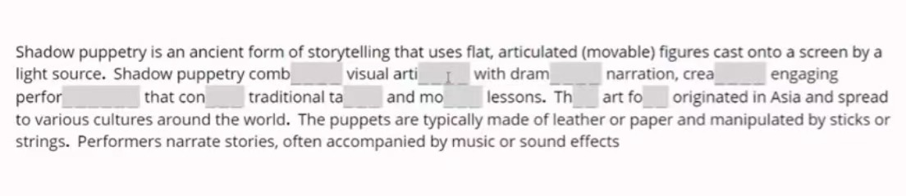
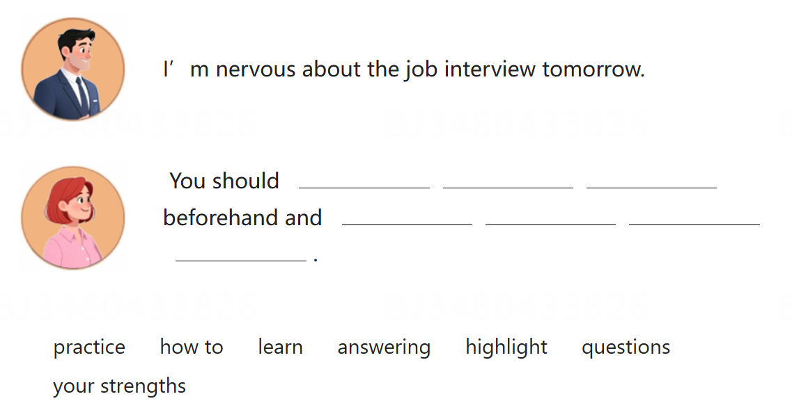

Reading
Reading部分采用自适应模式，分为两部分，并根据上半部分正确率决定下半部分的难度，不同难度下分数上限不同。
Complete the Words
给一段短文，其中部分单词缺少字母，需要自行填入正确的字母补全文章。

我觉得玩Wordle可以培养对这种题的直觉！Wordle是很有趣的猜单词小游戏！——Tweet-META
Read in Daily Life
给一段材料，背景与大学生活相关，例如：学校通知、邮件、课程安排、校园公告等。材料一般不长，总体来说不难，但会有坑。
Read an Academic Passage
给一段学术文章，内容涉及生物、历史、地质、心理、社会科学等领域。题目类似正常的阅读理解，材料相对较长，难度也普遍比Task2更高。
Listening
Listening部分也采用自适应模式，与Reading部分逻辑一致。注意托福的听力在音频放完前是看不到选项的，而且每段音频只放一遍，需要记下来音频中的信息。
Listen and Choose a Response
听一段音频，选择最合适的回复。
虽然听起来很简单但一般选项都比较奇怪，比如问“你想做A还是B？”，回答“你prefer哪个呢？”（？？？）
难点在于音频只放一遍，给的选择时间也很短，要求反应足够快。
Conversation
听一段两个人的对话，回答问题。一段对话有两道题，对话时间在半分钟左右，会考到比较细节的地方，比如具体干了什么。
Announcement
听一段公告，回答问题。总体类似Conversation，两道题，更重细节一些。
Academic Talk
听一段讲座，回答问题，时间大概在一分半到两分钟。讲座中的信息很密集，需要迅速跟上并能理解讲座中的内容（强制学习课外新知识）。
题目会问到讲座中提到的细节，也会问整体的逻辑，比如主题是什么，为什么提到了xxx等等。有一些题会考到最开头或者结尾的内容，因此全程都需要认真听，如果细节记不下来可以适当记笔记画图。
Writing
Writing部分不采用自适应模式。写作部分时间非常紧张，打字速度一定要足够快，并且保证打字不会影响自己的思路，这一点在平常需要多练。
Build a Sentence
根据提示选择正确的单词或短语来补全句子，也有可能出现完全自己造句的情况。

Write an Email
本部分七分钟，根据题目背景和要求写一封邮件，题目中会给大方向和这封邮件具体要做到什么。
需要保证邮件格式完整，对要求进行回应，并在此基础上尽量多写内容。
读完了（一定要先读完！！）抓紧时间就开始写，邮件时间很紧张一定不要先构思很久再动笔！写这个邮件一定要会瞎编，本来题目也会给的比较开放，再加上出门在外人设是自己给的，只要和题目给的不冲突编什么都可以，编完了一定要有信念感，把自己都给骗过去写出来就会非常自然了！——Tweet-META
Academic Discussion
本部分十分钟，题目中教授会给讨论的背景和问题，此外还有两位同学的回复。
写的时候可以参考同学的回复，如支持/反对xxx，原因是...，但需要加入自己的新观点；也可以完全自己写，但小心和同学的写重。
猜测打分时会重点看论证逻辑，字数不用太多，重点是把逻辑盘明白，最后给出合理的回复。
我个人很喜欢用让步开头，大概是这样的：先挑同学的刺，说这个人的观点有一定道理的，但是呢ta没有考虑到xxx，导致这个观点有缺陷，然后再带出来自己的观点... ——Tweet-META
Speaking
Speaking部分不采用自适应模式。口语在旧版托福里其实是第三科，改版后放到了第四科，但总之一定要集中注意力，也不要被写作影响心态。
Listen and Repeat
听一句话并重复。音频时间不会太长，但发音会有连读和吞音等现象，加上需要一遍背下来那句话，难度是很高的。
没有什么很好的技巧，也不建议记笔记，如果实在不记得是说什么了至少把句子说完整，只要是完整句且包含部分信息分就不会太低了。
Take an Interview
模拟面试，会有一位面试官问问题，问完之后立刻开始在45s内回答，没有单独的思考时间，总共有四道问题。
（据说甚至不同问题中间换人设也是可以的）